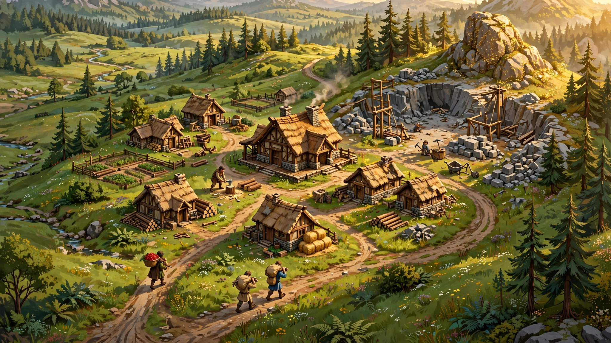

Play the test build
This is the live M13 test build — the game now opens on a Lobby Browser: the list of open games with live pings — join one, or create a lobby and share the link to play a friend in the browser, no accounts. Plus a working economy, construction, combat, and now the full command shell: queued orders, rally points, control groups and idle keys, just like your hands remember. Send villagers to gather wood, berries, gold and stone, train more at the Town Center, then build: Houses raise your population room, Farms grow food your villagers harvest. Your Scout Cavalry rides with the village from the start; sheep, boars and deer roam the map. A Barracks trains Militia and Spearmen, and advancing to the Feudal Age unlocks the Archery Range (Archers and Skirmishers), the Stable, the Blacksmith, the Market (buy and sell food, wood and stone for gold, at prices the whole match shares) and their technologies — Man-at-Arms, Fletching, Wheelbarrow and more. Every unit, building and tree on the map is now our own original art. A unit hiding behind a building shows its outline through it, in its owner's colour, and every match ends on a full score table — military, economy, technology, society. Every match now generates a fresh Arabia-style map — rolling hills, ponds, and fog of war — with both starts mirrored fair. The game opens fullscreen, on its own page.

Play the test build → · Play online →
Quick tips
- No account, no install — open the link and play.
- Play a friend: create a room and send them the invite link — they land straight in your room.
- A match opens in fullscreen — leave with the × Exit fullscreen button (top-right), or by holding Esc.
- A short Esc press cancels and closes panels, without leaving fullscreen.
- It works right in the browser, on phone and computer.
Why Skirmish II
Big strategy games want new hardware, a huge download and a store account. Skirmish II is the opposite: a complete little RTS that lives in a browser tab — for anyone, on any machine.
Skirmish II is the attempt to build one: it starts simple, it keeps growing, kept alive by the community, for the community. Anyone can play it — right in the browser, no install, no account.
The chess of the 21st century — mechanics that don't need to change. They need to run forever.
Same game, every machine
The simulation is pure Rust with fixed-point math: same seed, same commands, same result — on every computer. That is what makes fair multiplayer and replays possible.
Runs on anything
One build for every computer. Only the visuals scale to your machine — the simulation never does — so an old laptop and a gaming rig play on even terms.
Original & clean-room
Every sprite and every line of code is made for Skirmish II, from scratch. Inspired by the classics — never copied from them.
Built in the open
The source is on GitHub and the game grows in public, milestone by milestone. Play it, read the code, follow along — or fork it.
Roadmap
Small milestones, shipped one at a time. The economy, construction, combat, the full input shell, a scripted opponent, ages and technologies, generated maps with fog of war, the full Dark-and-Feudal roster and an end-of-match score table — and now send-a-link multiplayer — are playable today.